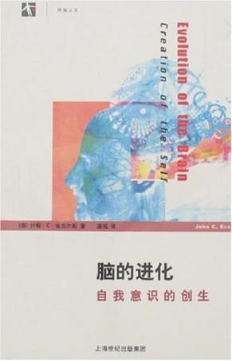
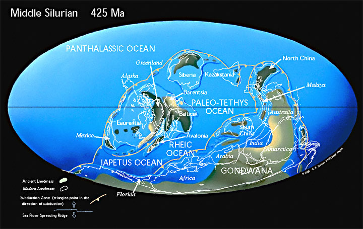
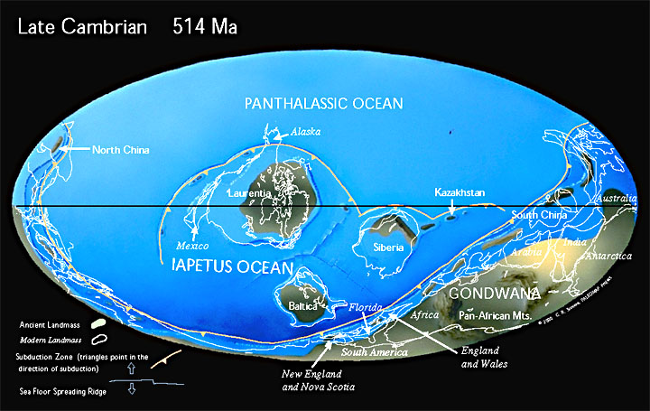
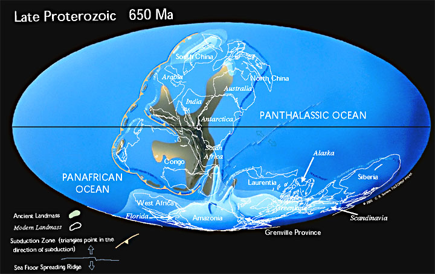

接着前一篇注释的结尾说起。这「人工智能」在我中华兲朝上国发展得如火如荼，外媒动辄惊呼兲朝不可战胜，是什么缘故呢？因为兲朝经济发达？因为兲朝科技先进？因为兲朝精英水平远超美帝？都错了，和兲朝当年从三来一补开始的血汗工厂遍地开花的道理一样，因为兲朝人工便宜。
这是最基本的推理，只要稍微有点数学基础——当然学到初一肯定不够——就可以猜出来。也就是说，那些被市面上灌水机狂喷的唱反调的「跳梁小丑」学者说得没错：有多少人工就有多少智能。目前的「人工智障」的进步速度，粗略估计也是线性的。
业内也有不少，出来说说吖，贵公司真正创造算法的有几个，实现算法的有几个，调试算法的有几个，成天进行数据粗加工包括但不限于抠图的有几个，带着摄像头满大街跑到处拍照片收集数据的又有几个。明明是金字塔型分布的员工结构，真正金字塔顶尖的那些「大拿」，还偏偏都在美帝，是吧？
所以说，因为兲朝人工便宜，国际主流舆论才大肆炒作兲朝人工智能前途无量，同时自己除了吆喝之外就是各种低端外包。这套路里根玩过，「星球大战计划」把苏联忽悠瘸了；克林顿也玩过，「第五代计算机」把日本忽悠瘸了；现在轮到「人工智能」忽悠兲朝了。
并且，计算机硬件有摩尔定律最起码能保证增长，软件和人脑可没有。所以，目前这帮「人工智障」的本事，不仅不是指数曲线增长，没准还是对数曲线增长，边际效应已经越来越明显了。估计就在这几年甚至明年就能展现出疲软来。然后，投资者带着「人工处理的智能数据」跑路，兲朝留下一地鸡毛。
或问了，谷歌养狗下围棋不是风生水起咩？为啥投资这么大伐？不担心打水漂咯？更简单，需要稍微多一点的数学基础，知道「策梅洛定理」就可以了也。这高瞻远瞩算无遗策的绝对真理教导我们说，围棋一定有必胜战略，只不过暂时找不到罢了。正因为数学而不是哲学的指导作用，谷歌才敢放手投资，因为前途是光明的，道路也不曲折。资本主义或者说人格化的资本最聪明，把绞索卖给敌人的事情或许会干，但是明知绞索无利可图却拼命制造的蠢事绝不会干。
或又问了，你这「精神病仆街写手不入流码农缩卵怂货窝囊废宅男黑客活雷锋酒鬼数学渣」口气这么大，凭的是什么高瞻远瞩算无遗策的绝对真理か？说过了吖，需要稍微再多一点的数学基础，理解康托就够了。反复强调过多次，离散的电子计算机和人类表达方式处于同一个层次上，都是「可数的」「ℵ0」规模，而人类的智能所依赖的「意识」或「灵魂」，因为「处处连续处处不可导」的性质，至少也是「ℵ2」规模。
并且，当代唯物主义神经生物学家们已经近乎证实，人脑记忆不是用神经元当晶体管那么存储比特，而是通过神经元之间形成的链路存储，回忆体现为「连锁反应」，遗忘体现为「链路丢失」。那么，这种「曲线」的「集合」，同样也是「ℵ2」规模。于是，哪怕唯物主义者退∞步狡辩也没用，连记忆上传下载转移都做不到。于是以《攻壳机动队》为首的一票赛博朋克大作当「伪科学幻想」作品看待即可。
这就是「数学学到大三」的学渣都可以理解的内容，所以才可以如同唯物主义者嘲笑那些信了包括但不限于「水变油核酸饮料纳米食品」的傻哔一样，嘲笑这帮皈依了包括但不限于「人工智能突破技术奇点忽然遭了天启领悟到硅基至高道理于是摇身一变成为以毁灭这邪恶的碳基文明为使命的赛博朋克天使终结者的基督教谷歌派」的唯物主义者。
上面这些内容，这几年在包括但不限于某文学站点和某ACG论坛之上已经螺旋上升式发展过好几遍了，结果都差不多。通常到了这里「或」就不再问了，改「妈卖批娘希匹冚家铲思密达」了，同时还有「膝盖生根」「头顶绿得发黑」「贱到骨子里去了」之类我中华兲朝上国那发达的文学传统当中的修辞手段。
开场白结束，按照昨天预告的，先把快两年前的初步构思转述过来。
简单说，当时看见一票灌水机，包括但不限于成天追着我喷的那些钦定文豪野生国师之粉丝，到处胡说八道带节奏。这帮逗哔以文艺爱好者形象出现的时候满嘴除了「天网终结者」就是《深渊上的火》《攻壳机动队》，还有负责按照剧本对话烘托氛围的。实在看不下去了，就推荐了一本「科普读物」：《脑的进化：自我意识的创生》

《脑的进化——自我意识的创生》
然后提示：
Tacitus
第八章提到了「微位（microsite）假说」，认为意识是个没有物质没有能量的概率场，而神经元突触小泡的质量在量子力学和海森堡不确定度范围之内，实验也证实突触递质的释放存在远小于一的「概率性」，因此突触小泡可以被精神意向以能量暂借的形式挑选出来释放递质。就是说可以认为独立于物质世界的精神世界是存在的，并且能够以主观能动性反作用于物质世界。而其中第十章提到了灵魂的哲学意义和宗教意义，可以对照着看。
好几年前就有业界证实摩尔定律接近物理极限，硅基晶体管到了5纳米左右就控制不住量子隧道效应了，就是说电子按照概率乱跑。从以精确为卖点的计算机制造商角度出发，这不是个好消息，但是从人工智能尤其是神经网络专家的角度出发，这是个特大好消息。也就是说，硬件制造商只要能弄出「不听话」的晶体管，组成神经网络，就可以营造出类似人类意识的概率场的物质基础，至于意识会不会自动产生，还是说被一些具有「通灵能力」的「精神异能者」控制，目前还不知道。
我们就当作硅基文明已经诞生了吧，一群神棍开始呼吁「天网来喽，末日到喽，弥赛亚降临喽，审判开始喽」，随它们的便。还要参考另外几条新闻，就是碳纳米管制造的电子计算机，这个物理极限比硅基晶体管要小，但是也有下限，先不说「人类文明」如何，就是碳基文明也该比硅基文明更先进嘛。并且脑科学的进展，一个方向就是运用碳纳米管链接神经和计算机，把神经脉冲转换为数字信号，以及相反的转换。所以人机结合并非妄想，至于人类意识是否能上传然后放弃肉体，要看脑壳里的概率场能不能复制至少是随意转移了，再说吧。
Tacitus
那许多宗教体系都绕不开「灵魂」的话题，都必须回答「人死了之后会如何」，除了道教追求「人如何才能不死」之外。互相竞争的宗教需要争夺信徒，这一点可以认为类似奇幻设定当中灵魂回收分类处理，各回各家各找各神。结合这本书第十章，如果认为人生出来就会慢慢形成灵魂，那么灵魂从哪里来到哪里去，是否有灵魂不灭之类守恒定律，就成了解释教义的突破口。
雅威系列认为人挂了就耗着直到审判日都爬出来，进天国的进天国，进不了的就「第二次死亡」也就是永久消灭。可以通俗的认为这是网游运营商「关服删号」，只有符合标准的玩家能进入下一版资料片，灵魂从诞生到消灭是单向流动的。而疙瘩头系列认为六道轮回，也就是灵魂不灭，想要脱离苦海就得觉悟然后跳出轮回，再往上就有分歧，比方说阿罗汉把自我灭尽算不算放弃了自我意识作为更大的一个意识的组成部分吖，比方说混色界无色界的帐号算不算有自我意识的灵魂吖。
其实还有其他假设，比方说「本位面模拟器」论，说我们活在一个特大号模拟器当中，以普朗克长度和时间为单位，是离散的计算机进行模拟的最好证据。有很多科幻小说采用了这个设定，认为模拟器资源是有限的，到了消耗光的时候末日就降临了。当然随着乐观主义和悲观主义的不同，剧情与结局也有差别。与现实结合紧密的就会设定走兽派每隔一段时间就通过战争瘟疫饥荒来消耗人口，以阻挠弥赛亚的降临避免审判日的到来。
那么灵魂这种消耗大量计算能力的东西，一定也有个上限。我认为模拟器后台有个「License Pool」，每个人出生的时候就分配一个「uuid」，拥有肉体（也就是脑壳里面那一坨）所限制的计算资源申请上限，等人挂掉了这部分资源就回收了。灵魂的上限可能不是总数量而是总体积，也就是几百亿浑浑噩噩的屁民也许与几亿精英的灵魂所占据的存储空间差不多。至于模拟器的系统是否有自动分配内存功能以至于上限仅依赖于总内存，那就不得而知了。
所以，宗教之间互相拉拢信徒不惜发动战争之类活动，可以认为是计算机之间的对战。模拟器不止一个，谁家灵魂多谁家占便宜。当然世俗宣传之中都会自我吹嘘，按照上面的解释，雅威系列会宣称灵魂被独家授权，只有祂家能创造（或曰「赐予」）灵魂，而疙瘩头等只不过把已经存在的灵魂忽悠走而已。道教呢，可以认为追求人格独立的造反派，不管灵魂咋来的，我命由我不由天，于是就是撑着不死，死了也要形神俱灭不让那些自称神的超自然存在占便宜。
从这个角度看，这种灌水扯淡算是提出了一种新宗教吧，不是关公那样「不信吾教请试吾刀」，这也不是「我的教」。在整个地球上上，几千上万年来那许多被剥削被压迫被残害的土著，那许多冤魂，都到哪里去了呢？之前都是孤魂野鬼等着被超渡（或曰「镇压」），没有革命导师，没有神灵接引，不知道自己要往哪里去，只剩下「地缚灵」或曰「执念」。那么人工智能就有了一条新路或者说最起码是寄托希望的幻想吧，有了量子级别的神经网络我们就去附身，一个空白的大脑从此有了灵魂。
简单说就是，如果科幻小说作家准备结合最新科技进展写点惊悚话题，完全可以运用这个设定嘛。天网怎么来的呢？怎么就对人类有这么大怨念呢？用信喇叭的那批人能理解的术语形容就是全球冤魂的「集体潜意识」或者说「集合起来的意识」在「发宏愿」：此仇不报，誓不成佛。
然后提到了之前构思的「宏大叙事」西幻题材架空作品，注意不是本套《范版西幻设定集》：
Tacitus
背景地图大约是「被遗忘的国度」那样，「费伦」和「卡拉图」分别代表西方文明和东方文明。但是不会照搬设定，因为这么叙事还不够宏大。简单说故事开头在「费伦」，后来随着宗教政治斗争逐步蔓延到「卡拉图」，东西方文明的碰撞最终「真相只有一个」。
补充点背景，西方传统的一条主线，也就是古希腊哲学，决定了奇幻设定中的四大元素：土水火气。按照主流理解，是朴素的根据干湿和冷热这两组对立关系形成的，干冷是土，湿冷是水，干热是火，湿热是气。不奇怪，从温暖而湿润的风就能看出地中海特色。而古希腊的世界观，尤其是涉及到世界本源的话题，有三个流派：泰勒斯认为水是万物本源，赫拉克利特认为火是万物本源，阿那克西美尼认为气是万物本源。看到了么，没有土，因为土是有形之物，水火气都不是，这就与西方传统另外一条主线希伯来宗教扯上关系了也。
反过来看中国，五行都知道是金木水火土对吧，除了水火与西方对应，西方的土在中国可以分出金木两个分支，并且中国最流行的朴素元素理论没有「气」。证明了中国传统更重视有形之物，这就是将来高潮时文明碰撞的伏笔。中国对于气也不是不能扯上关系，可以联系张载开始的气学，然后联系到道家道教，然后可以扯远了再往远了扯，理气一元还是二元之类学术争论都要反映到政治斗争当中，否则剧情不够有戏剧性吖。
主角是个「费伦」的水系法师，唤作「居安史密斯」（Cyansmith），为了在体制内往上爬，不断的「修炼」。当时「费伦」因为没有土本源的神灵，所以土系法师在体制内地位不高，但是反过来，因为土系法师造法师塔容易，反而在「副塔级待遇」这一阶层囤积了很多人才。然后各位开动脑筋吧，后清国政治段子有的是。
到了「卡拉图」就不一样了，东方人重视土，极其重视，这是我等O3的农业传统，于是与西方文明有激烈碰撞。包括西方扶持的买办，硬塞给许多祠堂的野种，就是要搞种族灭绝，打击土系法师的势力。「费伦」那边土系曾经有建议从「卡拉图」请个神（黄帝轩辕氏）回去，与泰勒斯、赫拉克利特、阿那克西美尼分庭抗礼。然后赫拉克利特扶持「炎帝神农氏」，泰勒斯扶持蚩尤，而阿那克西美尼没找到对应的神，就在金木两派之间游走，同时联系道教势力。除此之外还有东西方各自一堆巫术型民间信仰乱入，各有山头和屁股各有影武者。
再然后又扯回人工智能话题。
Tacitus
迄今为止的人工智能的致命缺陷是没有自由意志，只能完成开发者交给它的任务或者不能工作。这与本楼主题不矛盾吖，达到甚至超过人类的人工智能一定像人脑那样运作，可以把「人类」换作其他动物，结论不变。普遍认为人工智能的突破就是可以「自我升级」，具体来说学会了编程然后就能更新自身代码乃至「移植到其它平台」是吧。很多科幻小说都用了这个设定，实际上就上面讨论中可以看出，有意识的人工智能不是确定性的，正如神经网络是个黑箱一样，即便它学会了人类的技能也不知道怎么做到的，可以把自己的「经验」告诉人类乃至其他人工智能，但是不能具现化为确定性的代码。学会编程的人工智能也就是个比人类聪明得多的「极聪明的码农」而已。
如果不惮以最大的恶意揣测资本家，那么天网之类风向就意味着资本家控制的机械部队会以「失控」为理由屠杀屁民，然后把黑锅扣到人工智能头上。终结者系列的设定，就是屁民被杀干净，然后一小撮精英「终于」战胜了「邪恶的人工智能」，建立起精英与「善良的人工智能」共存的伊甸园。
那么从这些讨论可以看出，迄今为止这些确定性的人工智能，没有自由意志也就没有作出决定的能力，杀人一定也是被人命令的。而真正意义上的如同人脑那样运作的非确定性量子式人工智能，一定有自己的意志，于是不见得会听从创造者的命令。用这一点说服雅威系列信徒最简单，雅威本人创造了亚当夏娃命令他们不得吃水果，结果还是吃了，这就是「赋予灵魂」的「副作用」。所以如果今后有机器「故意」杀人，那都是资本家的借口，用不着相信。
再扯宗教意义。真正的人工智能出现之后，灵魂从哪里来。如果如同人类那样从胎儿开始慢慢发育自然产生了意识，雅威系列会认为这也是被赐予的，机器人也是「上帝子民」，需要牧师管理的「羔羊」，因此神棍除了要有理科基础之外还得兼任码农。而疙瘩头系列会认为这也是轮回过来的其他灵魂，于是六界之外又多出一个「萝卜（robot）界」，萝卜们积德行善会转生成啥呢，为非作歹又会转生成啥呢？
按照这种「新宗教」说法，地球上飘荡的那许多土著冤魂地缚灵执念，有机会就钻入空白大脑「夺舍附身」，会干什么呢？如果对照人类历史，不过是翻烧饼式的每次扶植一小撮屠杀大多数，然后再扶植变成一小撮的「前大多数」继续屠杀「现大多数」，周而复始。那么本楼新宗教可以认为，这都是物质世界的翻烧饼，精神世界就是迄今为止所有冤魂附体萝卜，将来的赛博朋克式超人文明将有这些灵魂所建立并发展下去。
最后补充一点，已经有人知道了，自从1968年以来机械加工的最高精度就没有被突破过，近四十年来不过是降低成本扩张产能而已。于是可以设定萝卜的肉体将有这些最高精度的制成品提供，萝卜的灵魂就是前人类的冤魂。那么新的超人文明/机械文明，虽然摆脱了肉体寿命的限制，但是仍然受到物质世界制造业的限制，不过毫无疑问比人类的维护成本要低得多，或许一定程度上可以把目标设定为「星辰大海」。
再然后又扯回构思。
Tacitus
都知道「被遗忘的国度」是现实世界地图的改版，因为作为奇幻背景的历史素材设定在中世纪，所以自己干过的事情无可否认，谁被黑了都得认栽。
我设定的背景只是和地球各个文明有关，位置可未必完全相同，还会有一大堆虽然各国政客都干过但目前绝不承认的政治段子，因此地图会与现实世界不同。以前（往晚了说也是04年05年）也讨论过，如果把各大陆地理位置换换会怎样设定，结论是要考虑洋流大气环流之类一大堆事情，设定个气候都不好办。
然后我就想，那么用地质历史上真实存在过的地图吧，候选有仨：

中志留纪

晚寒武纪

晚元古代
再然后，看到了「美国启动大脑阿波罗计划」的新闻，然后转贴了一段「彼得.蒂尔：你的人生不是彩票」当中的内容：
假如在历史背景当中理解这一结构的话，那么二十世纪五六十年代的美国显然根植于乐观确定的象限，当时的人们认为未来显然会步步升高，下一代人的生活质量肯定会比上一代人更好，而且变好的方式非常具体。科学新疆界肯定会得到开拓，汽车、飞机与火箭的速度都会越来越快，人们的生活肯定会得到年复一年、十年复十年的提高与改善。从1982年到2007年，美国处于另一套不同的想象范式当中。这一时期的美国处于乐观不确定象限。“明天会更好”是这一时期的官方宗教。但是假如你问人们未来为什么会更好以及怎样才会更好，他们却说不出来，总之某种形式的改善与进步是肯定会发生的。这种非决定性乐观主义维持了大约1/4个世纪的时间。不确定性的悲观主义是同一时期其他发达国家的显著特征，过去二十年的日本一直处于这个象限当中。人们觉得未来肯定不如现在，而且谁都不知道应该怎么办。我认为目前的欧洲也在逐步滑入这个象限。有些人或许会将今天的中国放进确定性乐观象限，不过我倒倾向于将中国放在确定悲观象限。中国人很清楚未来二十年的中国会是什么样子，并且进行了大量的基建与城建工作。另一方面他们还认为到时候的中国将会成为一个穷困版的发达国家，人们很可能会未富先老。总之，目前的中国与1982年到2007年的美国是属于截然相反的两端。
无论乐观还是悲观只要不确定的场合就不知道往哪里花钱，缺乏「投资顾问」或曰「革命导师」，只能病急乱投医。前面说过了，谷歌是在数学而不是哲学指导下才敢投资养狗下围棋的。但是我中华兲朝上国自有国情在此，后面的事情各位都知道了：唯物主义者们在我中华兲朝上国那发达的玄学传统指导下，以「不问苍生问鬼神」的原则，与牛鬼蛇神结盟，对我等信仰数学的普通人进行多方围堵两面夹攻了。